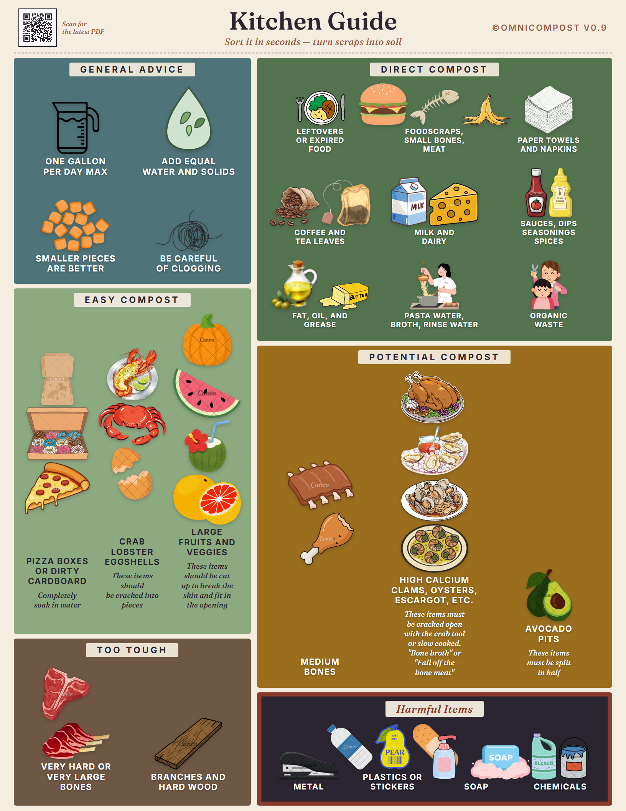
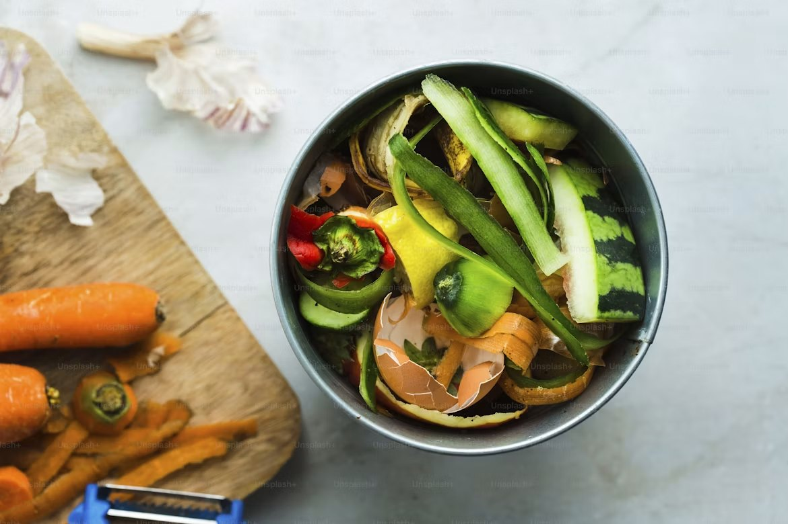
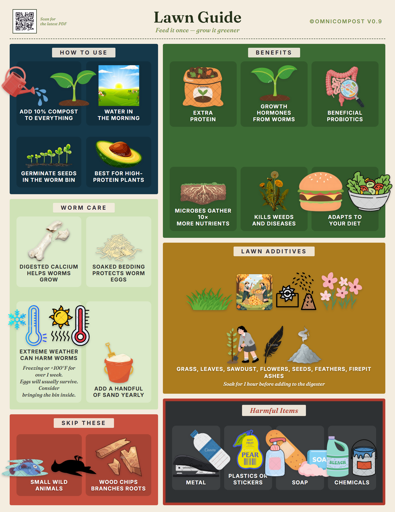
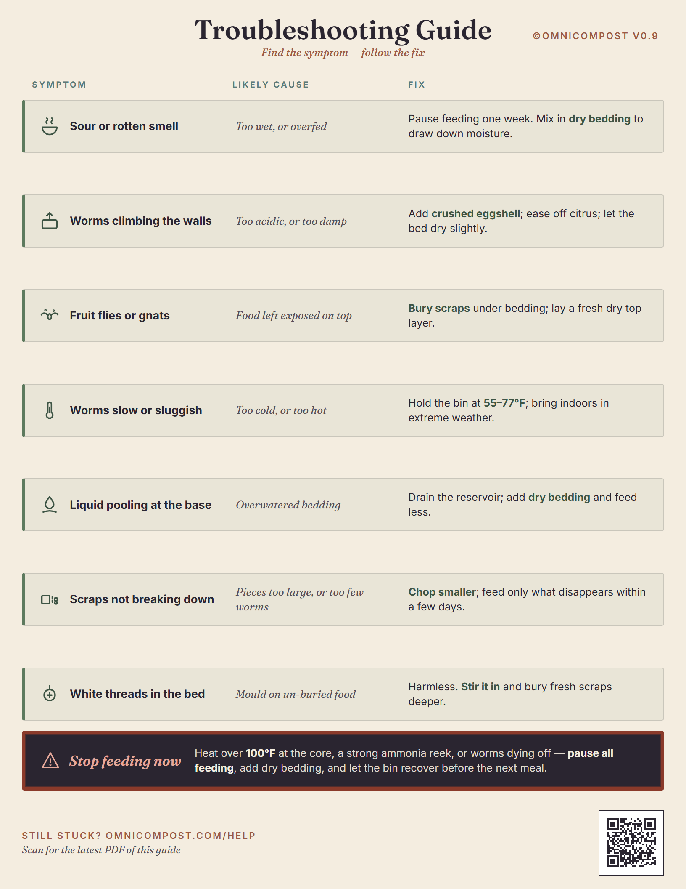
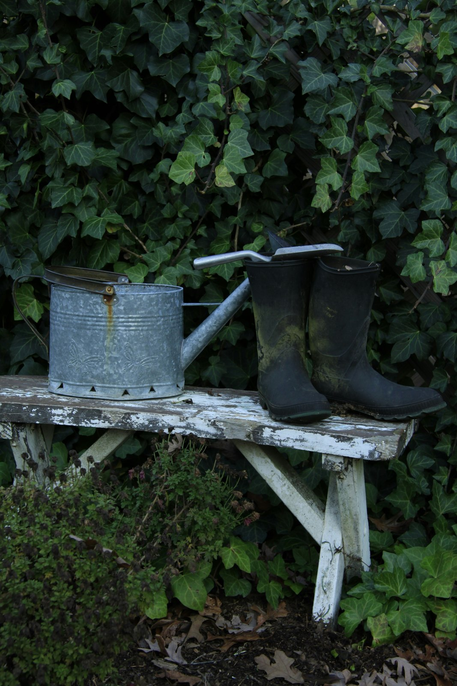

Kitchen
The Kitchen Guide

What goes in, what stays out, and the weekly rhythm — sized for the inside of a cupboard door.
View the print PDF — QR short links go live at launchA worm digester asks very little: a few minutes a week, the right scraps, and patience for the first season. Here is the whole loop — setup, feeding, the tea, and the harvest — with printable guides for the counter and a full set of questions at the end.
Four unhurried steps. The worms do the labor; the household keeps the rhythm.
Rest the digester somewhere out of direct sun and hard cold — a kitchen corner, a sheltered balcony, a spot under the sink. Soak the starter bedding brick, wring it to the damp of a wrung sponge, and spread it across the lower tray. Add the worms and leave them a day to settle before the first feeding.
Scraps go in the top tray — peelings, cores, coffee grounds, crushed eggshells. Bury each feeding under a little bedding to keep it covered. Start light: a handful every few days until the population finds its stride, then build toward the steady cupful.
Leave the tap open over the basin. Compost tea collects on its own as the trays work. Dilute it well before it reaches a plant — roughly half-and-half, paler than weak coffee — and pour it at the base, not the leaves.
After about eight weeks the bottom tray reads dark and crumbly, smelling of forest floor. The worms will have migrated up toward the fresh feeding, so the finished tray lifts out nearly worm-free. Spread the castings where the roots need them most.

A short list does most of the work. When in doubt, leave it out — the colony recovers faster from too little than too much.

| Feed freely | In moderation | Keep out |
|---|---|---|
| Fruit & vegetable scraps | Citrus & onion (small amounts) | Meat, fish, dairy |
| Coffee grounds & filters | Bread & grains | Oils & greasy food |
| Crushed eggshells | Garden trimmings | Glossy or waxy coatings |
| Torn cardboard & paper | Cooked plain vegetables | Pet waste, treated wood |
Printable cards for the counter and the shed — the same method, distilled to a single page. Scan a card's code to pull the current PDF; we keep the numbers in sync with the printed field guide in the box.

What goes in, what stays out, and the weekly rhythm — sized for the inside of a cupboard door.
View the print PDF — QR short links go live at launch
Dilution, timing, and where the tea and castings do the most good across a season.
View the print PDF — QR short links go live at launch
Odor, fruit flies, a bin too wet or too dry — the quick corrections, one symptom per line.
View the print PDF — QR short links go live at launchEach guide will carry a QR code linking to its latest PDF, so a card printed today still points at current guidance a year from now. The printed field guide ships in every digester box.
Setup & living with it
Out of direct sun and hard cold — a kitchen corner, a sheltered balcony, or under the sink. Indoors between 55 and 80°F is the easy range; the colony slows in the cold and stresses in real heat.
A balanced digester smells faintly of soil — never of waste. Odor is a sign of overfeeding or too much moisture, both quickly corrected by easing off the scraps for a few days and adding dry bedding.
Only if feedings sit uncovered. Bury each one under a little bedding and keep the lid seated, and flies have nowhere to land. A wet, overfed bin is the usual cause.
It's silent. The work happens below the lid, at the pace of soil. Most owners stop thinking of it as a compost bin within a few weeks.
A countertop recycler dries and grinds scraps into a dehydrated meal in a few hours — a dry additive that still has to break down once it reaches the soil. The digester runs the same scraps through a living colony of worms, which returns true vermicompost and a steady draw of compost tea. One dehydrates; the other composts. The castings are ready for the bed.
The Mini Digester is sized for it — 11 inches square and 18 inches tall, at home on a balcony rail or a corner by the door. It takes about half the daily volume of the full digester, enough for one or two.
Almost nothing. The worms work on the household's own scraps; bedding and the occasional refill of worms are the only consumables. A balanced bin draws no power, needs no bags, and asks for no filters.
It suits a curious household well. The lid seats firmly, the worms are harmless to handle, and the cycle — scraps in, castings and tea out — reads plainly enough that a child can follow it and lend a hand at feeding time. A dedicated children's edition, in its own voice, is on the way.
Feeding
Fruit and vegetable scraps, coffee grounds, crushed eggshells, and torn cardboard, freely. Citrus, onion, bread, and garden trimmings in moderation. Keep out meat, dairy, oils, and anything with a glossy or waxy coating. See the table above.
Up to 5 gallons in a single day won't hurt the system — a holiday or a big cleanup is no trouble. The steady average is roughly 2 lbs a day for a household of four.
Empty your kitchen caddy into the trays within about three days. Day to day, a covered feeding every couple of days keeps the rhythm without overwhelming the colony.
Yes, for the first two to three weeks. A new colony eats lightly while it establishes, then roughly doubles across a season of steady feeding. Feed to their pace, not the calendar.
The tea & the harvest
It's the liquid the trays release, rich in the microbes finished compost carries. Draw it from the tap, dilute to roughly half-and-half (paler than weak coffee), and pour it at the base of a plant rather than on the leaves.
At least every two weeks — the two-week rule — whether or not the garden needs it, so it doesn't sit and sour in the basin.
About eight weeks in, the bottom tray reads dark, crumbly, and earthy. The worms migrate up toward fresh food, so the finished tray lifts out nearly worm-free. Spread the castings or steep them for more tea.
Travel, seasons & delivery
The colony keeps two weeks without food or water. For longer absences, a deeper feeding and a damp sheet of cardboard over the top will carry it through about a month.
Indoors, yes, year round. On a balcony in a cold snap, move it inside or insulate the base — the worms slow below 50°F and suffer in a hard freeze.
The digester, two trays, the brass tap and basin, a starter brick of bedding, and a printed field guide. Orders ship statewide and nationwide, free over $150; across Orange County, delivery and setup are complimentary. Live worms ship separately, timed to your delivery week.
Thirty days to return the hardware for a full refund, and a living guarantee on the worms — replaced if they arrive other than alive or fail to establish in the first six weeks. Both windows start the day the order arrives; the full guarantee sets out the terms.

Reserve the Spring edition — shipped statewide and nationwide, free over $150, and set up by hand across Orange County. Worms timed to arrive with the digester.
Reserve a digester